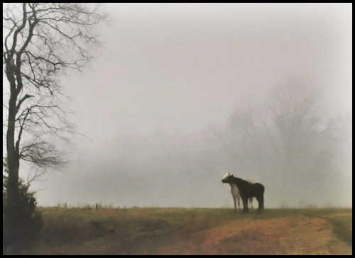

Outgrown
by Sally Clark

My daughter outgrew her pony,
mounting was stepping over rather than climbing up.
Relieved she didn’t want a larger version,
having been shoved, dragged and trodden on for five winters,
we sold him to the farm
where she could visit till she forgot.
That summer flies started to bother her,
drawn to the tears she shed for him.
She’d dislodge them with flicks of her long fringe
or dip her head to rub it on her straightened forearm
took to wearing her hair
brushed down one side of her neck.
She was growing up
but not into the expected spaces.
Her calves crept up her legs,
sinews and bone gliding beneath her skin.
I reeled to see her spine lift between her shoulder blades,
never told her off for slouching again.
When the school called
I didn’t try the precinct decked with truanting teenagers,
but drove to the hillside overlooking the farm,
far enough away if I didn’t want to believe.
The pony, punctuating his time tugging mouthfuls of grass
saw her first, skipping — no, cantering over the turf.
Feet and hands propelled her up to his gate.
I watched them arch,
neck over neck squealing.
Then she lifted her head,
curled her upper lip to touch her flared nostrils,
embalmed herself in his scent.
 |